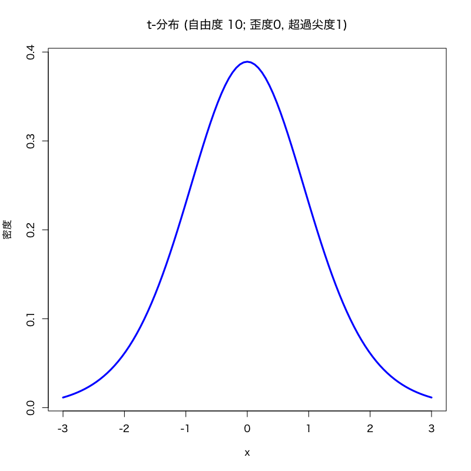
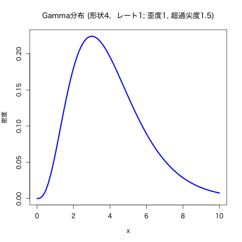

基礎的な記述統計量とデータの集約
(Press ? for help, n and p for next and previous slide)
村田 昇
不偏性 (unbiasedness):
推定量 \(\hat{\theta}\)
が不偏であるとは, \(\hat{\theta}\)
の平均が真の値 \(\theta\) となる性質
平均 (mean):
\begin{equation} \mu=\mathbb{E}[X] \end{equation}
標本平均 (sample mean):
\begin{equation} \bar{X} =\frac{1}{n}\sum_{i=1}^{n}X_{i} =\frac{X_{1}+\dotsb+X_{n}}{n} % =\frac{X_1+X_2+\cdots+X_n}{n} \end{equation}
データの代表値を表す記述統計量
分散 (variance):
\begin{equation} \mathrm{Var}(X)=\sigma^{2}=\mathbb{E}[(X-\mu)^{2}] \end{equation}
標本分散 (sample variance):
\begin{equation} S^{2} =\frac{1}{n}\sum_{i=1}^n(X_{i}-\bar{X})^{2} =\frac{(X_{1}-\bar{X})^{2}+\dotsb+(X_{n}-\bar{X})^{2}}{n} % =\frac{(X_1-\bar{X})^2+(X_2-\bar{X})^2+\cdots+(X_n-\bar{X})^2}{n} \end{equation}
データのばらつき具合を表す記述統計量
標本平均は \(\mu\) の 不偏推定量である:
\begin{equation} \mathbb{E}[\bar{X}]=\mu \end{equation}
標本分散は \(\sigma^2\) の 不偏推定量ではない:
\begin{equation} \mathbb{E}[S^2]=\frac{n-1}{n}\sigma^2 \end{equation}
(標本分散は平均的には真の分散を 過小推定 する)
バイアス補正: 標本分散に \(n/(n-1)\) を乗じたもの
\begin{equation} s^2=\frac{n}{n-1}S^2=\frac{1}{n-1}\sum_{i=1}^n(X_i-\bar{X})^2 \end{equation}
は \(\sigma^2\) の不偏推定量となる
基本書式
mean(x, trim = 0, na.rm = FALSE, ...) # 標本平均
var(x, na.rm = FALSE, ... ) # 不偏分散
sd(x, na.rm = FALSE) # 標本標準偏差
## x: ベクトル，データフレームなど
## na.rm: 欠損値を取り除くか否か
データ \(X_{1},X_{2},\dotsc,X_{n}\) の標準化:
\begin{equation} Z_{i}=\frac{X_i-\bar{X}}{s}\quad(i=1,2,\dotsc,n) \end{equation}
( \(s\) の代わりに \(S\) で割って定義する文献もある)
標本平均50, 標準偏差10に線形変換:
\begin{equation} T_{i}=10Z_{i}+50\quad(i=1,\dotsc,n) \end{equation}
基本書式
scale(x, center = TRUE, scale = TRUE) # 標準化
## x: ベクトル，データフレームなど
## center: 中心化(平均0)するか否か
## scale~: 正規化(分散1)するか否か
10 * scale(x) + 50 # 偏差値得点に変換
東京都の気候データ (tokyo_weather.csv) の中の
気温(temp), 日射量(solar), 風速(wind) の項目について以下の問に答えよ．
TW.data <- read.csv("data/tokyo_weather.csv")
歪度 (skewness): 平均 \(\mu\) , 分散 \(\sigma^2\) で 3次モーメントをもつ確率変数 \(X\) に対して以下で定義
\begin{equation} \mathrm{skewness}=\frac{\mathbb{E}[(X-\mu)^3]}{\sigma^3} \end{equation}
尖度 (kurtosis): 4次のモーメントをもつ確率変数 \(X\)
\begin{equation} \mathrm{kurtosis}=\frac{\mathbb{E}[(X-\mu)^4]}{\sigma^4} \end{equation}
超過尖度 (excess kurtosis): 正規分布との比較のため尖度から正規分布の尖度3を引いた量
\begin{equation} \mathrm{excess\ kurtosis}=\frac{\mathbb{E}[(X-\mu)^4]}{\sigma^4}-3 \end{equation}
(こちらを単に尖度と呼ぶ文献もあるので注意)
超過尖度が負の場合: 分布の形状は丸みを帯びている
正の場合，正規分布に比べて平均まわりの密度が 分布の裾の方にまわっていることが多いため, 正規分布より裾が重いと解釈されることが多い


標本歪度 (sample skewness):
\begin{equation} \mathrm{skewness}=\frac{\frac{1}{n}\sum_{i=1}^n(X_i-\bar{X})^3}{s^3} \end{equation}
標本尖度 (sample kurtosis):
\begin{equation} \mathrm{kurtosis}=\frac{\frac{1}{n}\sum_{i=1}^n(X_i-\bar{X})^4}{s^4} \end{equation}
歪度・尖度を計算する関数はRの標準機能にはないので
package::e1071 を利用 (自作してもよい)
標本歪度・標本尖度の値は標本平均・分散に比べて ばらつきが大きい ので， サンプル数が少ない場合の計算結果の解釈には注意が必要
基本書式
skewness(x, na.rm = FALSE, type = 3) # 標本歪度
kurtosis(x, na.rm = FALSE, type = 3) # 標本超過尖度 (尖度ではない)
## x: ベクトル，データフレームなど
## na.rm: 欠損値を取り除くか否か
## type: 計算法の指定(通常は既定値でよい)
tokyo_weather.csv) の中の
気温, 日射量, 風速の項目について以下の問に答えよ．
共分散 (covariance):
\begin{equation} \mathrm{Cov}(X,Y)=\mathbb{E}[(X-\mathbb{E}[X])(Y-\mathbb{E}[Y])] \end{equation}
標本共分散 (sample covariance):
\(X_1,X_2,\dots,X_n\) および \(Y_1,Y_2,\dots,Y_n\) に対して
\begin{equation} \mathrm{Cov}(X,Y)=\frac{\sum_{i=1}^n(X_i-\bar{X})(Y_i-\bar{Y})}{n-1} \end{equation}
相関 (correlation):
\begin{equation} \rho=\frac{\mathrm{Cov}(X,Y)}{\sqrt{\mathrm{Var}(X)\mathrm{Var}(Y)}} \end{equation}
標本相関 (sample correlation):
\(X_1,X_2,\dots,X_n\) および \(Y_1,Y_2,\dots,Y_n\) に対して
\begin{equation} \rho=\frac{\sum_{i=1}^n(X_i-\bar{X})(Y_i-\bar{Y})} {\sqrt{\sum_{i=1}^n(X_i-\bar{X})^2}\sqrt{\sum_{i=1}^n(Y_i-\bar{Y})^2}} \end{equation}
基本書式
cov(x, y = NULL, use = "everything",
method = c("pearson", "kendall", "spearman")) # 共分散
cor(x, y = NULL, use = "everything",
method = c("pearson", "kendall", "spearman")) # 相関
## x,y: ベクトル，データフレームなど (データフレームの時は列間の共分散行列，相関行列を計算)
## use: 欠損値などの扱いに関する指定
## method: 計算法の指定(通常は既定値 pearson でよい)
tokyo_weather.csv) の中の
気温(temp), 降水量(rain), 日射量(solar), 降雪量(snow),
風速(wind), 気圧(press), 湿度(humid) (数値データ)
の項目について以下の問に答えよ．
中央値 もしくは メディアン (median):
\begin{equation} X_{(1)}\leq X_{(2)}\leq\cdots\leq X_{(n)} \end{equation}
データを昇順に並べ替えたとき中央にくる値
基本書式
median(x, na.rm = FALSE, ...) # 中央値
quantile(x, probs = seq(0, 1, 0.25), na.rm = FALSE,
names = TRUE, type = 7, ...) # 分位点
summary(x) # 最大，最小，四分位点，平均を計算する
## x: ベクトル
## na.rm: 欠損値を取り除くか否か
## probs: 計算する分位点の値
## names: 出力に関する指定，多数の分位点を計算する場合は FALSE とした方がよい
## type: 計算法の指定(help(quantile) を参照)
連続分布の \(100\alpha\) %分位点 :
\(0<\alpha<1\) に対して，その分布に従う確率変数を \(X\) としたとき， 不等式 #+beginquote
\begin{equation} P(X\leq x)\geq\alpha \end{equation}
を満たす実数 \(x\) のうち最小のもの．
そのような実数は常に存在し, それを \(q_\alpha\) とすると
\begin{equation} P(X\leq q_\alpha)=\alpha \end{equation}
が成り立つ． #+endquote
分位点の性質
\(X_1,X_2,\dots,X_n\) が独立同分布な確率変数の列のとき, \(X_1,X_2,\dots,X_n\) の \(100\alpha\) %分位点は， \(n\to\infty\) のとき \(X_1,X_2,\dots,X_n\) の従う 分布の \(100\alpha\) %分位点の 一致推定量 となる．
基本書式
# 正規分布の例
qnorm(p, mean = 0, sd = 1, lower.tail = TRUE, log.p = FALSE)
## p: 分位点 (100p%)
## mean, sd: 正規分布の特性を決めるoption
## lower.tail: TRUE なら P(X<x) を計算
## FALSE なら逆
## log.p: 出力を対数とするか否か (値が小さい場合に利用)
## xxx分布の場合は以下の形式
qxxx(p, "分布の特性を決める option の指定")
tokyo_weather.csv) の中の
気温(temp; 数値データ)と最多風向(wdir; ラベルデータ)を用いて
以下の問に答えよ．